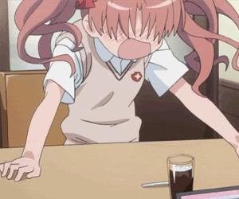

AniMedia twój pomocnik
AniMedia twój pomocnik
AniMedia pomaga ci odnaleźć ciekawe anime.
Ponad to możesz tu odnaleźć stony na których znajduje się polskie tłumaczenie.
Nasza baza danych może być aktualizowana poprzez użytkowników.
Wzór dodania jest banalnie prosty
Wystarczy przejść na stronę z formularzem dodania
DODAJ ANIMEAniMedia do odczytu
Aby odnaleźć anime wystarczy przejść na poniższą storne.
Odnajdziesz tam mnóstwo ciekawy anime.
Pamiętaj jednak że wchodzisz w ten świat na własną odpowiedzialność

